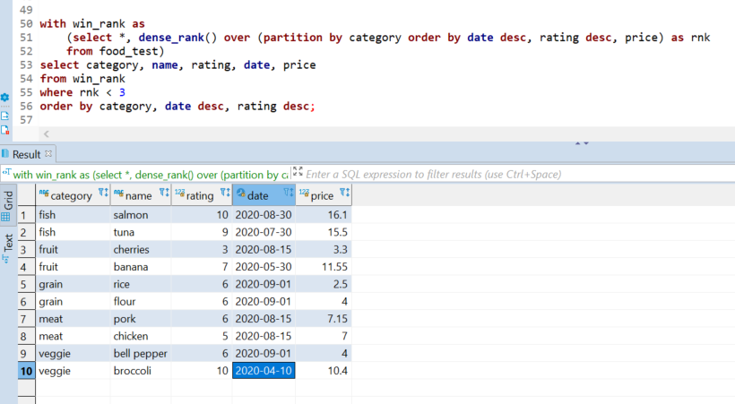

Introduction
Most of the projects I have worked on are company-related and therefore proprietary, but I can present use cases and examples. I also present data visualization and web projects from graduate coursework a few years ago.
It's in progress - more to come.
Code examples
SQLRanking items with a window function
Basic Aggregation
Python
Counting objects in AWS S3
Searching for text in S3 objects
Pandas and web development project
Data Visualization
SQL
Ranking items with a window function
This is a simple but practical example that can apply to tables of any reasonable size (I haven't tried on a table with a billion rows using Hive). Let's say we have food in a supermarket's inventory. I'm using DBeaver to access the table in AWS Redshift, FYI.
Some of the food is old. We need to find the most recent foods so we can throw out the rest.
- within each category, sort and find the most recent two foods by date
- if there's a tie on date, keep the one with a higher rating
- if there's a tie on rating, take the lower priced one
Here's the inventory table. Note that we have some ties for date within fruits and veggies. How can we keep the ones highlighted in orange and ignore the gray?
The rank function can help us do that. I'll first show the table with the rank column so we can confirm the logic. For example with veggies, we get the most recent date and where there's a tie for second, we get the higher rated vegetable, which is broccoli.
Now all we need to do is find where the rank value is 1 or 2. Most people would do a nested query like this:
That works but I also like the common table expression (CTE). For longer queries, I find them more manageable.

Indeed, we get the bananas and broccoli as expected. Where those rows tied on date, we got the one with the higher rating.
Basic Aggregation
Continuing with the food inventory example from above, I want to find the following:
- change the "meat" and "fish" labels to "protein"
- find the average price of foods within the new categories
- count the number of food items in each category
I'll first start with a case statement to rename the labels in a column "new_category", putting it side by side with "category" to confirm it's correct:
That looks good. Now I'll use a CTE again to find the average and count values. I use the round function to get two decimal places.

Great. I manually confirmed that the average price of fruit is 9.4875, which shows that the average and round functions work. Also we can easily see the counts of each category are correct.
Python
Counting objects in AWS S3
Let's say we have many objects in S3 and need to count how many there are based on the file extension. Here I test a script using this bucket, the contents of which are shown in the AWS Console:
You could also see the contents using an AWS CLI command:
$ aws s3 ls s3://test/
PRE empty_folder/
2020-02-04 20:50:10 5759690 MovieSimilarities1M.jar
2020-09-29 18:56:28 130 countries.txt
2019-07-23 17:24:28 55 fruits.csv
2020-09-29 18:49:35 153 music.csv
This is all we need to get started. boto3 is the library that allows Python to talk to S3. I also use "re" which is for regular expressions. It helps with doing search/replace and pattern matching text. All we need to do is import libraries, define the bucket name, and then see what objects AWS returns.
import boto3
import re
s3 = boto3.resource('s3')
bucket = s3.Bucket('test')
for file in bucket.objects.all():
print(file)
I'm editing in vim from an EMR cluster. I've been using vim for a long time. Run the script:
$ ./count_bucket_items.py
s3.ObjectSummary(bucket_name='test', key='MovieSimilarities1M.jar')
s3.ObjectSummary(bucket_name='test', key='countries.txt')
s3.ObjectSummary(bucket_name='test', key='empty_folder/')
s3.ObjectSummary(bucket_name='test', key='fruits.csv')
s3.ObjectSummary(bucket_name='test', key='music.csv')
This is a good start but note that it prints the folder, which we want to ignore. S3 doesn't have the concept of folders - it's just another object, in the same way that cloud platforms like AWS and Azure don't have "files" either. It's all objects. Anyway we only want to consider actual "files".
This script will iterate through the returned list and do the following:
- ignore any value that ends with a slash / (indicates a folder)
- look for anything with a pattern that has a dot, as in "file.ext", and the extention must have alphabetic characters
- split on the dot "." to get the extension
- increase the count if the extension exists in a dictionary, otherwise add it to the dictionary
- add to overall count of objects
- add to total size of all objects
- print a summary of what was returned
for file in bucket.objects.all():
if not re.search("/$", file.key):
if re.match(".*\.[a-z]+$", file.key):
ext = file.key.split('.')
if ext[-1] in ext_dict.keys():
ext_dict[ext[-1]] += 1
else:
ext_dict[ext[-1]] = 1
else:
print("Something didn't match here\n")
cnt += 1
size += file.size
print("found", cnt, "objects\n")
print("extensions found:")
for x in ext_dict.keys():
print(x)
print("\ncounts by extension:\n")
for i,j in ext_dict.items(): # print the extension and number of objects
print(i,j)
print("\ntotal size of bucket:", round(size/1000000), "Mb")
print("\nFinished extension count")
Now I run it and get the expected output based on the bucket contents. This can work in production with hundreds or thousands of objects.
$ ./count_bucket_items.py
Start extension count...
found 4 objects
extensions found:
csv
txt
jar
counts by extension:
csv 2
txt 1
jar 1
total size of bucket: 6 Mb
Finished extension count
Searching for text in S3 objects
I was once asked to search for any objects in S3 that have a particular column name, among thousands of CSV and tab-delimited text files. This is an example of the solution.
If you recall from the previous example, there was a file called "countries.txt" in the S3 bucket. These are the contents:
In this example, the ask is to find any object in the bucket that has a column called "continent". Here is the approach:
- get a list of all objects in the bucket
- iterate through the list and filter out anything that does not end in .csv or .txt
- put together the request and send to S3; the important part is a kind of SQL statement to get just the first line of an object
- iterate through the objects and save to a list any objects that match the text we want
- print the objects and column names where the text match was found
- I also included a "not_read" list if any files for some reason could not be read
import boto3
import re
import botocore.exceptions
s3 = boto3.client('s3')
bucket = "test"
obj_list = []
not_read = []
text_match = {}
cnt = 0
# get a list of all objects in the bucket
r = s3.list_objects_v2(Bucket=bucket)
print("Starting here:\n")
# filter for only objects ending in .csv or .txt, save to obj_list
for x in r['Contents']:
for key, val in x.items():
if key == 'Key' and re.search(".*\.(csv|txt)+$", val):
print(val)
obj_list.append(val)
cnt += 1
print("\ntotal objects: ", cnt)
# use a SQL-like statement, doing a "limit 1" because we only need to check the first line
sql_stmt = """select * from s3object limit 1"""
for obj in obj_list:
try:
req = s3.select_object_content(
Bucket=bucket,
Key=obj,
ExpressionType='SQL',
Expression=sql_stmt,
# 'FileHeaderInfo': 'NONE' is needed or else it would ignore the first line
InputSerialization = {'CSV': {'AllowQuotedRecordDelimiter':True, 'FileHeaderInfo': 'NONE'}},
OutputSerialization = {'CSV': {}})
except botocore.exceptions.ClientError:
not_read.append(obj)
else:
try:
# Payload has the first line of the file
for event in req['Payload']:
for key, val in event.items():
if key == 'Records':
first_line = val['Payload'].decode('utf-8')
match = re.findall(r"continent", first_line, re.IGNORECASE)
if match:
text_match[obj] = first_line
except botocore.exceptions.EventStreamError as error:
csv_unescaped.append(obj)
raise error
if len(not_read) > 0:
print("**************** could not read these files!\n")
for x in not_read:
print(x)
print("\n************************ found a match in this file!\n")
for x, y in text_match.items():
print(x, y)
print("\nScript end")
With all of that, run the script:
$ ./s3_text_search.py
Starting here:
countries.txt
fruits.csv
music.csv
total objects: 3
************************ found a match in this file!
countries.txt country continent
Script end
As expected, the script prints all .csv and .txt objects, the total count, and any matches, which in this case was the "countries.txt" object
Pandas and web development project
Exploring the World Bank API and development indicators
How effective is aid? Much has been written about the economic failures of Latin America in the 1970s and in Africa throughout the 1980s and 90s. Despite massive amounts of aid, many countries failed to achieve economic growth or quality of life improvements.
This project tries to measure the effectiveness of aid by looking at how much countries have received compared to a few development indicators.
The Effectiveness of Foreign Aid
Jupyter Notebook and Pandas Update
The above website is still up but the Python code doesn't work because the World Bank changed their API. I just re-wrote the code using Jupyter Notebook and Pandas, which I had not yet known about back in 2015!
Jupyter Notebook dataframe - calculations and aggregation
Data Visualization
Data Visualization final project
These are various visualizations creating using R, High Charts, Google Charts, and Tableau. The topics include health, education, economy, demographics, and other social indicators.
Data Visualization Final Project
Advanced Data Visualization final project
Created with JavaScript and D3, this project explores US imports and exports by comparing the trade of goods and services.
Advanced Data Visualization Final Project
Back to top